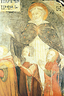

|  |
|---|
[86782] Germinet terra, pars 1 Germinet terra herbam virentem, et proferentem semen, lignum quoque pomiferum faciens fructum. De Christo dicit Isaias: generationem eius quis enarrabit? Generatio Christi quodammodo dependet ex generatione Mariae: loquor de temporali Christi generatione. Unde ad enarrandam generationem Mariae sensus humanus non sufficit. Invocemus igitur gratiam spiritus sancti per quam Maria sanctificata est, et rogemus divinum spiritum quod det mihi aliquid dicere.
[86783] Germinet terra, pars 2 Germinet terra et cetera. Hoc habet divinae dispositionis ratio ut singulis rebus secundum convenientiam earum provideat, et ideo, homini, quia humanus est, de terra remedium adhibuit. Unde in Ecclesiastico: altissimus de terra creavit medicinam. Proponitur autem duplex medicina de terra, scilicet virens herba, et lignum pomiferum. Herba virens est beata virgo cuius nativitatem his diebus celebrat Ecclesia. Ipsa enim dicitur herba per humilitatem, virens per virginitatem, proferens semen per foecunditatem. In specie herbae tria considerare possumus. Herba est altitudine brevis, tenuitate mollis, et virtute salubris. Primo dico herba est altitudine brevis. Si comparemus herbam ad arborem, videmus quod herba crescit parum in altum, et arbor crescit multum in altum. Per altitudinem autem arboris superbia significatur. Unde Ps.: vidi impium exaltatum, et elevatum sicut cedros Libani. Vidi impium, idest superbum, quia superbia impietatis est principium, exaltatum in prosperitate mundi, contra quos dicit apostolus: praecipe divitibus hujus saeculi non sublime sapere, et elevatum in cogitatione, quia superbus in cogitatione elevat se supra se. Iob: si ascenderit in coelum superbia eius, et caput eius nubes tetigerit; quasi sterquilinium in fine perdetur. Vides igitur impium sic exaltatum in prosperitate mundi et elevatum in sua cogitatione sicut cedros Libani. Unde in Amos: altitudo cedrorum, altitudo eius. Herba igitur non multum crescit in altum, sed est brevis, in quo significatur humilitas. Ps.: producit herbam servituti hominum. Per servitutem humilitas significatur. Mirum est quod arbor multum elevatur a terra, et tamen firmissime inhaeret terrae, herba autem parum adhaeret terrae, et radices eius breviter evelluntur a terra. Ita superbus licet se multum magnificet et elevetur in altum, tamen affectus eius in terra est defixus, et a terra evelli non potest. Humilis autem nihil habet in terra, unde affectus ejus cito a terra removetur. Sic igitur ratione modicitatis comparatur herbae. In beata virgine multa fuerunt propter quae commendabilis est. Fuit plena gratia, testimonio Angeli. Fuit in matrem Dei electa; imo mater Dei effecta, tamen de sola humilitate gloriabatur dicens: quia respexit humilitatem ancillae suae. Quaerebat dominus mulierem per quam genus humanum salvaret, et contraria contrariis curantur. Perditum fuit genus humanum per superbiam, quia initium omnis peccati superbia. Non fuit igitur decens ut filius humilis in matre superba habitaret, qui per humilitatem genus humanum salvare debuit. Unde non respicit Deus nisi ad humilitatem. De humilitate beatae Mariae dicit Augustinus in sermone de eius assumptione: o vera, inquit, Mariae humilitas quae Deum hominibus peperit, vitam mortalibus edidit, caelos innovavit, mundum purificavit, homini Paradisum aperuit, animas hominum liberavit. In parvitate igitur herbae humilis humilitatem Mariae. Secundo, herba non est dura sed mollis. Molle est quod cedit tactui, et cor molle dicitur quod de facili cedit. Et notandum quod est quaedam mollities cordis virtuosa et naturalis; quaedam vitiosa et innaturalis. Naturalis ordo requirit quod inferius cedat actioni superioris. Voluntas sive cor hominis inter duo constitutum est: habet aliquid supra se et aliquid infra se. Si facile cedat ei quod est infra se, ut concupiscentiae carnis et cupiditati mundi, ista est innaturalis mollities de qua in proverbiis: ut eruaris a muliere mala et extranea, quae mollit sermones suos; Iere.: exeatis de medio eius ne forte mollescat cor vestrum. Ista non fuit mollities istius herbae. Item habet voluntas hominis supra se Deum: unde divinae motioni cedere debet, quia cor durum male habebit in novissimo. De ista mollitie dicit Job: Deus emollivit cor meum. Juventus comparatur herbae Ps. mane, scilicet, in iuventute, sicut herba transeat. In iuventute homo facile ducitur. Istam teneritudinem habuit beata virgo per obedientiam, quia statim ad verbum Angeli obedivit et credidit quod ex spiritu sancto conceptura esset, et subiunxit statim: ecce ancilla domini fiat mihi secundum verbum tuum. Ita est de sanctis quod non possunt aliter docere nisi sicut vivunt, et quia beata virgo obedientissima fuit ideo obedientiam docuit. Inter alia quae de ipsa dicuntur in Evangelio legitur quod praecipue docuit praeceptum obedientiae: quodcumque, inquit, dixerit vobis facite. Dicit: quodcumque dixerit, facite. Non dicit: praeceperit, quia hoc habet obedientia prompta quod solum ad verbum superioris obediat. Unde apostolus ad Titum: dicto obedire, dicit. Obedientia praecipue virtus est. Unde dicit de ipsa Gregorius in moralibus: sola virtus est quae ceteras virtutes menti inserit, insertasque custodit. Aliqui vadunt submurmurando et dicunt quod melius est obedire spontanea voluntate quam ex voto, et hoc falsum est. Inter cetera bona exteriora nullum bonum est ita magnum sicut offerre sacrificium, et melior est obedientia quam victimae. Unde Gregorius: obedientia, inquit, iure victimis praeponitur, quia in victimis mactatur caro aliena: in obedientia vero mactatur propria voluntas, et beata virgo facto et verbo obedientiae doctrinam proposuit. Per inobedientiam unius hominis omnes peccatores sumus; decuit igitur ut per obedientiam salvaremur, et sicut obedientia filii incepit in matre, ita beata virgo obediens fuit. Tertio herba est virtute salubris, unde valet ad sanandas infirmitates, et nisi herba haberet virtutem medicinalem frustra diceretur in libro sapientiae: neque herba, neque malagma sanavit eos. Genus humanum fuit infirmum: Ps.: miserere mei, domine, quia infirmus sum; sana me. Infirmitas ista consequuta est ex peccato, et Deus voluit adhibere remedium medicinae, fecit ad similitudinem boni medici. Quando boni medici volunt ostendere medicinam suam ponunt se primo ad graves infirmitates, ut sic reddantur famosi. Languebat totum genus humanum, et in muliere videbatur quasi totum corruptum, unde dixit Salomon: inveni mulierem amariorem morte; et ideo dominus volens ostendere suam medicinam esse bonam ostendit eam primo in muliere, ut per mulierem derivaretur ad alios. Unde in Ecclesiastico: medicina omnium in festinatione nebulae. Unde Salomon dixit in oratione sua: dixit dominus ut habitaret in nebula. In ista nebula, idest in beata virgine est salus generis humani, quia per eam sanatur. Unde dicit in Ecclesiastico: in me omnis gratia viae et veritatis, in me omnis spes vitae et virtutis; et quia medicina omnium est in ista nebula, idest in beata virgine, ideo dicit apostolus: adeamus cum fiducia thronum gratiae eius ut misericordiam consequamur, in auxilio opportuno. Dicit: in festinatione nebulae quia virtus huius medicinae apparuit festine. Festinum est quod in pueritia aliquis consequatur gratiam, et beata virgo in utero materno consecuta est gratiam, quia sanctificata est in utero ab originali culpa, licet concepta fuerit in ea. Ps.: Deus in medio eius non commovebitur scilicet nec per peccatum mortale nec veniale. Unde Augustinus: cum de peccatis agitur de matre domini nullam volo fieri prorsus mentionem. Adiuvabit eam mane diluculo idest in ipso ortu. Unde littera Hieronymi in suo Psalterio habet: auxiliabitur ei Deus in ipso ortu matutino. Ideo ejus nativitatem prae ceteris sanctis celebramus nisi nativitatem Christi et Joannis Baptistae. Fuit ergo beata virgo herba per humilitatem. Item fuit herba virens per virginitatem. Dicitur in Jeremia: omnis herba regionis siccabitur; sed beata virgo fuit herba virens per virginitatem. Unde in Lucae: missus est Gabriel Angelus ad Mariam virginem. Videte quod in virore videmus humorem, pulchritudinem et utilitatem seu necessitatem. Primo, dico, in virore videmus humorem tamquam causam, quia humidum causa est viriditatis. Unde in Ecclesiastico: super omnem aquam viriditas. Et scire debetis quod herba quaecumque exsiccatur ab igne vel a sole, sic concupiscentia carnis desiccat virorem virginitatis. Job: ignis est usque ad consumptionem devorans. Sed quid nutrit virorem virginitatis? Certe amor coelestis, quia virginitas est quid coeleste. Unde Hieronymus: in carne praeter carnem vivere non est mundana vel humana conversatio sed coelestis. Et apostolus quando monuit ad virginitatem dixit: unusquisque proprium donum a Deo habet: alius sic, alius sic. Virginitas est ex gratia Dei cum libertate liberi arbitrii. Unde dixit adolescens: non possum esse continens nisi Deus dederit mihi. Numquid humor gratiae fuit in beata virgine? Certe sic. Unde dixit ei Angelus: ne timeas Maria, invenisti gratiam apud Deum. Ipsa copiosissime habuit gratiam. Unde dixit ei Angelus: ave gratia plena et quia plenitudinem habuit humoris gratiae, ideo non contenta fuit servare virginitatem modo consueto scilicet per continentiam coniugalem, sed ultra communem usum in proposito habuit firmissime in perpetuo servare virginitatem. Unde dixit: quomodo fiet istud, quoniam virum non cognosco? Idest cognoscere non propono? Secundo in virore videmus pulchritudinem delectantem. Dicitur in Ecclesiastico: gratiam et speciem desiderabit oculus, et super haec virides sationes. Puritas carnis et virginitas delectat oculos Dei et sanctorum. Et quare? Proprie delectat ordo, sive pulchritudo ordinis. Dicit Augustinus: si quis videret fenestras confuse dispositas in domo, non delectaretur in illis. Ordo naturalis hominis est ut caro spiritui subiiciatur, et decor est quando ordo iste servatur; sed quando ordo confunditur tunc homo est turpis; et ideo est quod peccata carnalia, licet quaedam non sunt ita gravia sicut alia, magis tamen reddunt hominem infamem, quia turpia sunt et hominem faciunt deordinatum, et quod est inferius in homine, faciunt superius, et e converso. Sed in beata virgine nihil fuit inordinatum, nec actu, nec affectu, nec primos motus peccati habuit. Unde in Cantic.: tota pulchra es amica mea, et macula non est in te. Et propter hoc dictum est ei: concupiscet rex speciem tuam. Item in virore invenimus quod est utilis. Quamdiu herba est virens tunc speratur quod fructum faciet; sed quando arescere incipit, tunc amplius non speratur de eius fructu. Isa.: aruit herba, defecit germen, omnis viror interuit. E converso quando herba est virens, tunc speratur quod faciet fructum. Unde Ysa.: et erit folium eius viride, et non desinet facere fructum. Sic quando aliquis viret per virginitatem, tunc faciet fructum caritatis, sed quando aret per concupiscentiam tunc sunt infructuosa eius opera quoad vitam aeternam. Apostolus: qui seminat in carne, de carne metet corruptionem. Herba sicca ad nihil utilis est nisi ut mittatur in ignem; similiter qui ardent igne concupiscentiae ad nihil utiles sunt nisi ut mittantur in ignem Inferni. Sed beata virgo fuit excellens in virginitate, imo regina virginum; et quia excellenter habuit de virore virginitatis, ideo fructum fecit mirabilem. Aliae virgines, quia virgines sunt, faciunt fructum spiritualem, de quo fructu dicit apostolus: fructus spiritus: caritas, gaudium, pax. Et beata virgo quia copiam habuit viroris, ideo fructum fecit ventris. Dictum est ei: benedicta tu in mulieribus, et benedictus fructus ventris tui. Et super illud Isa.: ecce virgo concipiet, et pariet filium in corde eius mirabiliter ardebat, ideo in carne mirabilia faciebat. Aliae virgines fecerunt fructum spiritalem, sed ipsa fecit fructum ventris. Fuit igitur herba virens. Dicit: germinet herbam facientem semen. Et cuiusmodi semen? Dico semen sanctum, semen virtuosum, et semen necessarium. Primo dico fecit beata virgo semen sanctum. Isa.: semen sanctum erit quod steterit in ea. Et quare sanctum? Quia erit sancti. Primo est sanctitas Dei, quia ipse est sanctus sanctorum. Sancti, inquit, eritis, quia ego sanctus sum. Huiusmodi sancti est semen, et ideo est sanctum semen. Semen est verbum Dei et Christus est verbum Dei. Proprietas seminis est quod producat simile ei a quo procedit; ita semen verbi Dei producit simile sui, quia facit deos. Unde in Joanne: dedit eis potestatem filios Dei fieri. Abraham commendatur de sanctitate, et sicut Christus secundum spiritum est semen Dei, ita secundum carnem est semen Abrahae, et: Abrahae dictae sunt promissiones, et semini eius. In semine, inquit, tuo benedicentur omnes gentes. Est igitur semen illud benedictum. Item per semen verbi Dei efficimur filii Dei, ita per semen Abrahae filii Abrahae: benedictum est semen quod attulit nobis benedictum. Item est semen illud virtuosum. Unde in Evangelio comparatur semini sinapis, quod est minimum semen et facit arborem magnam ita ut aves coeli in ramis eius resideant. Semen parvum est Christus qui parvus fuit in cruce, et crevit in tantum quod coelum et terram repleret. Ascendit super omnes coelos ut adimpleret omnia. Item est semen illud necessarium. Unde Isaias: nisi dominus reliquisset nobis semen, quasi Sodoma fuissemus. Et beatus Petrus dicit: non est in aliquo alio salus, neque datum est aliud nomen hominibus in quo oporteat nos salvos fieri. Mirabilis est ista herba, et mirabilis eius germinatio. Terra ista est humana natura destituta humore gratiae. Jerem.: aspexi terram, et ecce vacua erat, et nihili. Quomodo ergo potuit producere herbam? Certe nullo modo. Item fuit terra ista arida per concupiscentiam peccati. Unde in Ecclesiastico: in meridiano exurit terram. Item fuit terra ista infima, quia creavit Deus sursum coelum, terram vero deorsum. Quomodo igitur germinavit? In Genesi dicitur: dixit Deus; germinet terra herbam virentem. Dixit verbum, idest verbum genuit quod fructum fecit. Unde in proverbiis: sapientia aedificavit sibi domum, scilicet in beata virgine, et istam fecit sibi germinare herbam. Ps.: homo natus est in ea et cetera. Ipse homo implevit terram istam quia vacua erat. Ps.: visitasti terram, et inebriasti eam, multiplicasti locupletare eam. Item quia arida fuit ideo humectavit eam spiritus sanctus. Ps.: in stillicidiis eius laetabitur germinans. Item quia infima fuit, ideo indidit se terrae ut eam semen coeleste faceret. Isa.: quomodo imber descendit de coelo, et inebriat terram, et germinare eam facit, sic erit verbum meum. Si quis igitur est vacuus per peccatum recurrat ad istam herbam et replebitur bonis. Ps.: replebimur in bonis domus tuae. Item si quis aridus est recurrat ad illud verbum et humectabitur. Ps.: in ipso speravit cor meum, et adiutus sum. Item si quis depressus est ad ima, recurrat ad illud verbum et deducetur ad lucem coelestem. Ps.: emitte lucem tuam et veritatem tuam, ipsa me deduxerunt in montem sanctum tuum, et in tabernacula tua. Quod nobis praestare dignetur et cetera.
[86784] Germinet terra, pars 3 Germinet terra herbam virentem et cetera. Altissimus de terra duo remedia nobis attulit, scilicet herbam virentem, et lignum pomiferum. De herba quae est beata virgo dictum est. Restat modo dicere de ligno pomifero quod est lignum venerandae crucis dominicae, cuius solemnia modo incoepimus, et satis congrue ista duo remedia coniunguntur, quia herba virens salutem nostram protulit, sed lignum pomiferum ipsam sustinuit et exaltavit, quia factus est Dei filius obediens etc. et sequitur propter quod exaltavit illum et cetera. Unde in Evangelio dicitur quod: stabat iuxta crucem mater Jesu. Videamus de isto ligno. Tria videtur Moyses describere circa lignum illud, scilicet eius speciem, eius ornatum, et eius fructum. Si speciem requiris: lignum; si ornatum: pomiferum; si fructum requiris: est faciens fructum. Primo, dico, si requiris speciem istius ligni, lignum est. Lignum illud competit nostro remedio propter tria, quia competit vulneri, competit reparationi, et competit reparatori. Primo, dico, lignum crucis competit nostro remedio, quia competit vulneri. Humanum genus per lignum vulneratum est, quia primus homo comedit de ligno vetito; et ideo divina sapientia medicinam de ligno ligno invenit. Vulneratum est genus humanum propter inobedientiam, quia primus homo pomum ligni vetiti subripuit. Novus homo quasi pomum salutiferum se ligno restituit. Ps.: quae non rapui, tunc exolvebam. Ligno restituit se ipsum ut recompensaret damnum et afferret remedium. Unde in libro sapientiae: benedictum lignum, per quod fit iustitia. Videte: comparemus lignum ligno. De illo ligno vetito tria dicit Scriptura. Videns mulier lignum quod erat bonum ad vescendum, et pulchrum oculis, aspectuque delectabile, tulit de ligno et comedit. Primo, dico, illud lignum est bonum ad vescendum; et propter hoc aptum est nutritioni. E contra lignum crucis docet carnis mortificationem. Unde dicitur: quem principes vestri interemerunt. Item illud est lignum mortis. Apostolus: si secundum carnem vixeritis, moriemini; sed lignum crucis e contra mortificando carnem vivificavit. Apostolus: Christus semel pro peccatis nostris mortuus est, iustus pro iniustis, ut nos offerret Deo, mortificatos carne, vivificatos autem spiritu. Item apostolus: si secundum spiritum carnem mortificaveritis, vivetis. Secunda in ligno vetito fuit pulchritudo mundana. Unde dicit: vidit lignum quod esset pulchrum oculis. Isai.: omnis gloria eius tamquam flos agri. Habet flos pulchritudinem et gloriam mundi, sed est maledicta quia per eam trahuntur homines in damnationem. Iob: ego vidi stultum firma radice firmatum, et maledixi pulchritudini eius. E contra lignum crucis habet ignominiam. Unde scriptum est pro tempore illo: maledictus Deo qui pendet in ligno. Et videte quod dicit quod erat pulchrum oculis Adam et Evae, de quo gloriabatur. Primo de scientia dixit eis serpens: eritis sicut dii, scientes bonum et malum. Unde dicebatur: lignum scientiae boni et mali. Quaedam sunt bona quibus homo non male utitur, ut virtutes: sed habere experientiam rerum non est habere virtutum (sic). Abundant aliqui in bonis mundi, et male quandoque utuntur. Lignum illud habuit pulchritudinem oculorum, sed lignum crucis habuit confusionem stultitiae. Unde apostolus: praedicamus Christum crucifixum: Iudeis autem scandalum, gentibus quidem stultitiam. Sed pulchritudo illius ligni commutata est in ignominiam. Unde in Osee: gloriam eorum in ignominiam commutabo; sed ignominia crucis commutata est in gloriam. Unde in Ezechiele: ego dominus lignum sublime humiliavi, et exaltavi lignum humile. Videte quomodo exaltatum est lignum crucis. Cosroe rex Persarum quasi captivum duxerat illud lignum de Ierusalem, et per Eraclium reportatum est in Ierusalem, et propter memoriam gloriae illius dicitur festum exaltationis sanctae crucis usque nunc, et semper exaltatur crux, quia: confirmat iustos dominus. Augustinus in commendatione sanctae crucis dicit: crux finita est in poenis et manet, transit de suppliciis damnatorum ad frontes imperatorum. Et Chrysostomus dicit: crux ubique fulget in coronis regum, in armis militum, in sacris altaribus, reges depositis coronis crucem accipiunt. Exaltatum est igitur lignum crucis. Exaltabit ipsum dominus amplius. Unde in Matthaeo: sol et luna obscurabuntur, et videbunt: signum filii hominis in celo idest lignum crucis. Et dicit Chrysostomus quod numquam sole et luna obscuratis filius hominis appareret nisi clarior esset crux radiis solaribus. Item lignum illud habuit delectationem. Unde in Genesi: erat aspectu delectabile. Delectatio crucis non est delectatio vera, quia plus est ibi de amaritudine quam de delectatione. Unde Salomon: risum reputavi stultitiam, et gaudio dixi: cur frustra deceperis. E contra lignum crucis habuit pulchritudinem amaritudinis, quod significatur in libro regum ubi dicitur: ferro armabitur et ligno lanceato. Et apostolus Petrus: Christo in carne passo, et vos eadem cogitatione armamini. Ista punctio amaritudinis vertitur in dulcedinem quod significatur in Exodo ubi dicitur quod filii Israel invenerunt aquas amaras: praecepit dominus Moysi quod imponeret lignum, et dulcuratae sunt aquae. Si iusti patiuntur tribulationes, lignum crucis facit eas dulces. Crux etiam facit in tribulatione gloriari. Apostolus: mihi absit gloriari nisi in cruce domini nostri. Et Iac.: omne gaudium existimate, fratres, cum in varias tentationes incideritis. Et quare? Propter existimationem crucis. Apostolus: recogitate eum, qui talem pro nobis apud semetipsum sustinuit a peccatoribus contradictionem cum latronibus fuit deputatus. Quis igitur debet pro malo habere si contradictiones sustineat? Competit igitur lignum crucis vulneri. Item competit reparationi. Videte in sacra Scriptura, ubi fuit periculum? Datum est remedium. Per lignum primum malum hominis fuit quando Adam est eiectus de Paradiso; quod fuit remedium? Lignum vitae; sed quia ad lignum vitae accedere non potuit, ideo remedium habere non potuit. Unde dixit dominus: videte ne forte sumatur de ligno vitae: et Christus attulit nobis lignum. Unde scribitur: lignum vitae qui apprehenderint eam. Aliud periculum fuit in diluvio. Remedium fuit per lignum archae. Si es in diluvio, in fluminibus saeculi recurre ad lignum crucis. Ps.: si ambulavero in medio umbrae mortis et cetera. Virga tua, et baculus scilicet crucis et cetera. Per lignum deducor ad regimen. Item populus Israel fuit in periculo quando opprimebatur ab Aegyptiis, et remedium fuit per lignum, quia Moyses virga percussit Aegyptios, virga divisit mare. Si habes impugnationes hostium spiritualium recurre ad lignum crucis. Dicitur in libro regum quod filii Israel pugnabant contra Philistaeos, et portata est arca domini in castra, et: ingemuerunt Philistaei dicentes: vae nobis quia arca Dei venit in castra. Arca fuit ex lignis imputribilibus, Ps.: contristabantur qui habitant terminos a signis tuis. Qui victi sunt timent vexillum adversarii sui, et quia Daemones victi sunt a Christo, timent eius vexillum, quod est lignum crucis. Unde cantat Ecclesia: ecce lignum crucis, fugite partes adversae. Competit igitur lignum vulneri et reparationi. Tertio competit reparatori, quia per lignum crucis exaltatus est Christus. Unde etiam scribitur: oportet exaltari filium hominis. Et quomodo est exaltatus? Certe sicut pugnator. Unde convenit ei quod dicitur in numeris: consurget virga ex Israel, et confringet principes Moab. Apostolus: exspoliavit principatus et potestates. Igitur lignum crucis est sicut currus triumphalis: est exaltativum Christi. Unde est sicut ferculum Salomonis: est etiam sicut virga dirigens populum. Ps.: virga directionis, virga regni tui. Exaltatus est igitur Christus sicut pugnator. Item est exaltatus sicut magister in cathedra. De ista exaltatione dicit: cum exaltatus fuero a terra, omnia traham ad meipsum. Vidimus modo spem remedii. Videamus ornatum ligni. Ornatus arboris est quod sit onusta pomis; et de isto ligno dicitur quod est pomiferum. Et quae sunt eius poma? Dicitur in canticis: omnia poma, nova et vetera servavi tibi. Poma vetera sunt figurae quae referuntur ad lignum. Unde in Osee dicitur de istis pomis: quasi prima poma, vidi omnes patres eorum. Poma nova quae sunt? In Deuteronomio in benedictione Ioseph fit mentio de tribus pomis, scilicet, de pomis caeli, de pomis solis et lunae, et de pomis collium aeternorum. Quae sunt poma caeli? Membra Christi. Crux membris Christi fuit ornata, sicut arbor ornatur pomis, non solum membris corporis Christi corporalis, sed corporis mystici quibus debet dicere: Christo confixus sum cruci. De pomis istis dicitur in canticis: veniat dilectus meus in ortum suum, ut comedat fructum pomorum suorum. Item poma solis et lunae sunt exempla virtutis, quae Christus in cruce demonstravit. Habes exemplum charitatis a Christo in cruce quia dilexit nos, et tradidit semetipsum pro nobis. Et in Ioanne: maiorem charitatem nemo habet quam ut animam suam ponat quis pro amicis suis. Item demonstravit nobis exemplum humilitatis, quia: humiliavit semetipsum. Dedit etiam exemplum obedientiae, quia factus est obediens patri. Item docuit exemplum patientiae, quia: cum malediceretur non maledicebat. Ista sunt poma convallium de quibus in canticis: descendi in hortum meum, ut viderem poma convallium. Poma collium aeternorum quae sunt? Dico quod sunt documenta doctorum qui sapientia sunt imbuti. Ps.: illuminans tu autem mirabiliter a montibus aeternis. Invenies aliquos doctores instruentes fidem; et Christus in cruce fidem docuit dicens: Deus, Deus, quare me dereliquisti? Ostendit humanitatem esse passam, non propter impotentiam divinitatis. Item invenies doctores dirigentes ad opem; et Christus in cruce direxit ad opem dicens latroni: hodie mecum eris in Paradiso. Item invenies doctores docentes patientiam. Hoc fecit Christus in cruce dicens: pater ignosce illis quia nesciunt quid faciunt. Item invenies aliquos doctores incitantes ad devotionem; et hoc fecit Christus in cruce dicens: pater, in manus tuas commendo spiritum meum. Item invenies aliquos instruentes de conversatione humana; et hoc fecit Christus in cruce, quia exhibuit matri quod debuit, et discipulo similiter, dicens: mulier: ecce filius tuus. Deinde dixit discipulo: ecce mater tua. Ista sunt poma collium aeternorum de quibus in canticis: emissiones tuae Paradisus malorum Punicorum cum pomorum fructibus. Est igitur lignum pomiferum. Sed sunt arbores quae continue habent flores et fructus, sic arbor crucis continue habet flores. Et videte quod lignum crucis triplicem fecit fructum, scilicet fructum purgationis, sanctificationis, et glorificationis. Primo, dico, lignum crucis fecit fructum purgationis, quia per crucem liberamur a peccatis. Unde beatus Petrus: peccata nostra pertulit super lignum. De fructu isto dicit Isaias: hic est fructus omnis ut auferatur peccatum. Secundo, lignum crucis fecit fructum sanctificationis, de quo ad Romanos: habetis fructum in sanctificatione. In quo est sanctificatio? In hoc quod homo cruci adhaereat. Verum etiam quod homo per peccatum est alienatus a Deo, et per Christum reconciliatus est. Unde ad Rom.: reconciliati sumus Deo per mortem filii eius. Iob: quiesce ei, et habeto pacem; et per hoc habebis fructus optimos, scilicet: fructus spiritus, charitas, pax, gaudium et ut Christus per lignum: nos sanctificaret extra castra passus est et in qualibet sanctificatione ministri Ecclesiae utuntur signo crucis. Tertius fructus crucis est glorificationis de quo in Ioanne: qui metit fructum congregat in vitam aeternam. Et in libro sapientiae: bonorum laborum gloriosus est fructus. Iste fructus adquiritur per crucem, sicut dictum est. Per peccatum homo exclusus est a Paradiso, et ideo Christus in cruce passus est ut per crucem pateat nobis aditus de terrenis ad coelestia. Unde significatur crux Christi per scalam quam vidit Iacob. Unde in Genesi: vidit Iacob scalam, et cacumine eius coelos tangebat, et vidit Angelos ascendentes et descendentes, et dominum innixum scalae. Omnes sancti per virtutem crucis ascendunt coelos. Unde apostolus: habemus fiduciam per sanguinem crucis in introitu sanctorum et cetera. Rogabimus dominum et cetera.